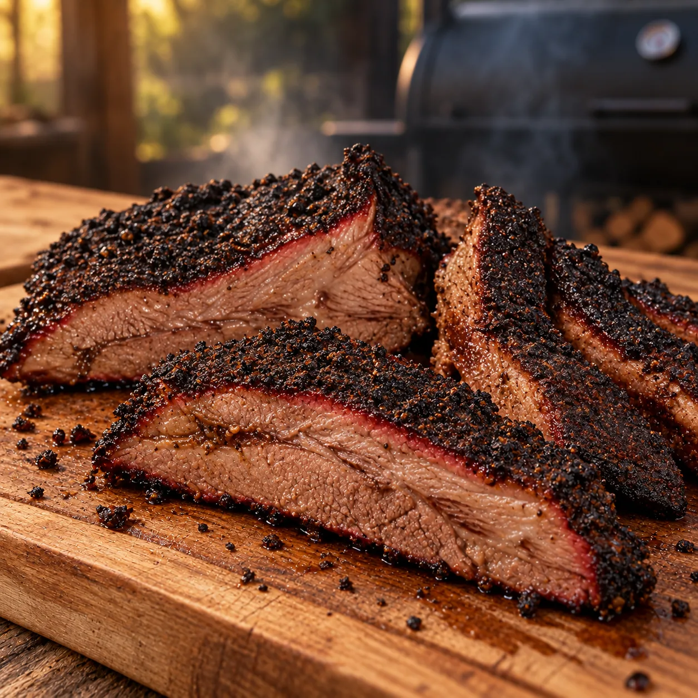

Unsere Klassiker · Grill & BBQ
Brisket aus dem Smoker
Saftiges Rindfleisch mit kräftiger Kruste und feinem Raucharoma

Brisket braucht Zeit, belohnt die Geduld aber mit zartem Fleisch, einer würzigen Kruste und einem herrlichen Raucharoma. Es wird langsam bei niedriger Temperatur im indirekten Bereich gegart.
Zutaten
Für das Fleisch
2–3 kgRinderbrust am Stück
6 ELSonnenblumenöl
Rub
2 ELMeersalz
2 ELRohrzucker
2 ELPaprikapulver, edelsüß
2 ELChilipulver
2 ELSchwarzer Pfeffer, frisch gemahlen
2 ELZwiebelpulver
2 ELKnoblauchpulver
Außerdem
1 HandvollRäucherchips
Das brauchst du
1Smoker oder verschließbarer Grill
1Grillthermometer
1Scharfes Messer
Zubereitung
- Die Rinderbrust sorgfältig von festen Sehnen und überschüssigem Fett befreien. Eine gleichmäßige Fettschicht auf dem Fleisch lassen, damit es während der langen Garzeit saftig bleibt.
- Alle Zutaten für den Rub gründlich vermischen. Das Fleisch rundherum dünn mit Sonnenblumenöl einreiben und den Rub kräftig von beiden Seiten andrücken. Abgedeckt 2–3 Stunden im Kühlschrank ziehen lassen.
- Den Smoker oder verschließbaren Grill auf 110–115 °C einregeln. Das Brisket in den indirekten Bereich legen, sodass es nicht direkt über der Glut liegt.
- In den ersten 1½ Stunden nach und nach Räucherchips auf die Glut geben. Die Temperatur möglichst gleichmäßig halten und den Deckel nur öffnen, wenn es nötig ist.
- Das Brisket je nach Dicke ungefähr 8 Stunden langsam garen. Es ist fertig, wenn es sich bei leichtem Druck weich und elastisch anfühlt und ein Messer nahezu ohne Widerstand hineingleitet.
- Das Fleisch vom Smoker nehmen und vor dem Anschneiden kurz ruhen lassen. Anschließend mit einem scharfen Messer quer zur Faser in Scheiben schneiden.
Dazu passt
Brisket ist ein Herzstück der klassischen BBQ Plate. Dazu passen Pulled Pork, Spareribs, selbst gemachte Bratwurst und Coleslaw.
Tipp
Eine passende Rinderbrust am besten rechtzeitig beim Metzger vorbestellen und darauf achten, dass die Fettschicht noch vorhanden ist.